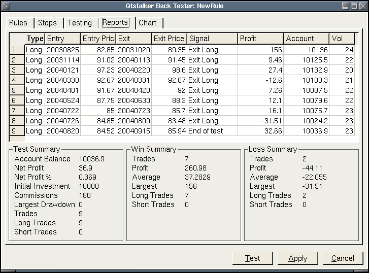

Frequently Asked Questions
Back Tester Reports
This where the results of the most recent test will be displayed.
The top list contains all the trades that were performed. The column descriptions are:
- Type - The trade is either long or short.
- Entry - The entry date of the trade YYYYMMDD
- Entry Price - The entry price paid.
- Exit - The exit date of the trade YYYYMMDD
- Exit price - The exit price paid.
- Signal - The is the reason the trade was closed. Signal will always be either a stop signal or trade signal.
- Profit - The profit of the trade.
- Account - The balance of the account after closing the trade.
- Volume - The volume of the trade.
Test Summary breakdown:
- Account Balance - The account balance at the end of the test run.
- Net Profit - The net profit of all trades.
- Net Profit % - The net profit percentage.
- Initial Investment - The opening account balance.
- Commissions - The sum total of commissions.
- Largest Drawdown - The largest sum loss of the account balance during testing.
- Trades - The total number of trades performed.
- Long Trades - The total long trades performed.
- Short Trades - The total short trades performed.
Win breakdown:
- Trades - The total winning trades performed.
- Profit - The total profit of winning trades performed.
- Average - The average total of all winning trades.
- Largest - The largest winning trade performed.
- Long Trades - The total of winning long trades.
- Short Trades - The total of winning short trades.
Loss breakdown:
- Trades - The total losing trades performed.
- Profit - The total profit of losing trades performed.
- Average - The average total of all losing trades.
- Largest - The largest losing trade performed.
- Long Trades - The total of losing long trades.
- Short Trades - The total of losing short trades.